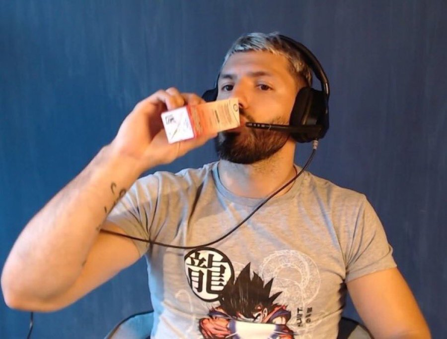

Sergio Agüero nació el 2 de junio de 1988 en el hospital Piñero, de la ciudad de Buenos Aires. Debutó profesionalmente en Independiente el 5 de julio de 2003 y se convirtió en el jugador más joven en jugar en la Primera División de Argentina en el día de su debut con 15 años y 35 días, batiendo el récord que ostentaba Diego Maradona desde 1976. Tras una notable temporada 2005-06 fue transferido al Atlético de Madrid, donde se consolidó como uno de los jugadores de mayor proyección en Europa, Agüero anotó 101 goles en 234 partidos con el Atlético, ganando la Liga Europa y la Supercopa de Europa antes de recalar en el que fue el club más trascendente de su carrera, el Manchester City Football Club inglés, y al que debe sus mayores éxitos y reconocimientos.
En la última jornada de su primera temporada con "los citizens", anotó un gol en el tiempo de descuento de la última jornada que le dio el título de la Premier League al club tras 44 años de sequía. En la temporada 2014-15 ganó la Bota de Oro de la Premier League, y en noviembre de 2017 se convirtió en el máximo goleador de la historia del club. El 23 de mayo de 2021, en su último partido disputado en Premier League marcó dos goles y se convirtió en el jugador con más goles anotados para un mismo club en la liga inglesa. Finalmente en 2021, se unió al Barcelona en una transferencia gratuita, antes de retirarse del fútbol a los 33 años debido a problemas de salud en el mismo año. Jugó solo cinco partidos con el club, y su único gol llegó en el primer Clásico de la temporada 2021-22.